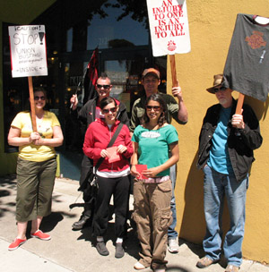
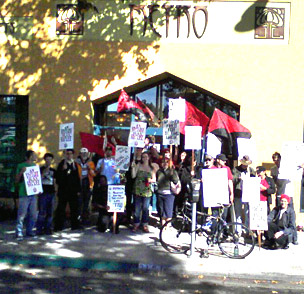

All workers in blast furnaces, steel mills, aluminum plants, etc. All workers engaged in the production and repair of agricultural machinery, cars, locomotives, engines, automobiles, bicycles, air craft, and various instruments. Tool makers, jewelry and watchmakers.
Submitted on Wed, 02/20/2008 - 5:41pm
Disclaimer - The opinions of the author do not necessarily match those of the IWW. The image pictured to the right did not appear in the original article, we have added it here to provide a visual perspective. This campaign is not an IWW campaign, but it is being reported here, because it is an example of rank & file struggles within the pro-capitalist mainstream business unions. This article is reposted in accordance to Fair Use guidelines.
Submitted on Tue, 01/01/2008 - 3:46pm
Workers in struggle, Barcelona, Spain
Workers at the Frape Behr factory in Barcelona have occupied their factory
because of a company plan to fire 295 workers. The Behr company is in Stuttgart,
Germany, and it specializes in manufacturing of car air conditioning and engine
cooling systems. The need for solidarity by December 31 is urgent.
From CNT-AIT Barcelona we are supporting the workers of the Frape Behr
factory (sister company of the german Behr) in Barcelona. Behr has reported a
labour force adjustment plan (LFAP) to 50 workers and profit limits. For three
months the workers have rejected this offer.
Submitted on Mon, 11/19/2007 - 2:14pm
By Gabe Wilson and Matt K., Bay Area IWW
This commentary is a response to Christine Staples' "Truth to Power: what Truth? What Power?" of November 16th, 2007, in which the author attempts to portray the striking workers at Metro Lighting and their union as thugs attempting to "take over Metro Lighting, or to drive them out of business trying." These accusations are too ridiculous to deserve a response, and they only serve to divert attention from the real issues at the store. Her editorial makes no attempt to deal seriously with the concerns of Metro Lighting's employees, so we would like to make these real issues known.
Workers have the right, protected by law, to take concerted activity to improve their conditions at work and to bargain with their employer over these conditions. The workers at Metro Lighting were brave enough to assert this right, and have faced unwillingness to negotiate and illegal retaliation from the owners. What led up to this?
Submitted on Fri, 10/19/2007 - 4:40pm
------------------------------------------
PLEASE FORWARD WIDELY
------------------------------------------
Today, owners of Metro Lighting and Crafts filed restraining order papers against fired IWW member as another attempt at breaking solidarity and picket lines. The restraining order sites an event that took place in May 2007 and requires that Gabe W. not be allowed to meet with fellow workers (even the 6 workers currently on strike!) and denies him the right to picket the store which fired him for union organizing.
Basically, this is another underhanded attempt by the owners to break union solidarity and try to stem lost business from the pickets.
Submitted on Tue, 10/09/2007 - 12:48am
The San Francisco Bay Area Branch was out in full force this Saturday on the picket line in solidarity with striking workers at Metro Lighting, Berkeley's now infamously "green" lighting business.
Highlights included songs, chants, lots of honking and the owner, Lawrence Grown, posting a profile of a sociopath in the window. (We assume that he was warning customers of his presence!!!) Many customers chose not to cross the picket line and were directed to other Berkeley lighting businesses, but those that dared to cross the picket line were loudly booed and resorted to leaving shamefully out the back door.
Workers at Metro Lighting are striking over the unfair labor practices of the owners, Lawrence and Christa Grown, who last month fired one of their workers for labor organizing and whistle blowing over unsafe working conditions. They are demanding that all union workers be rehired with back wages and a pay raise for the retail workers who make almost half as much as their co-workers in the assembly shop in the back.
Please come out this Saturday in support of our fellow workers at Metro Lighting from noon to five. The business is located at 2121 San Pablo Ave. in Berkeley just south of University. For those who cannot attend, please make sure to call them at 1-888-METRO20 or email them at info@metrolighting.com and let them know that you will be taking your business elsewhere.